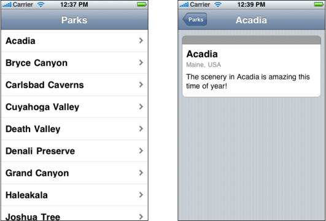

Web Application Tutorial
This tutorial walks you though using Dashcode to create a web application. As you follow the steps, you learn how to choose a template, customize your application’s code, and share your application with others. Completing this tutorial is a quick and easy way to get started building web applications in Dashcode.
This is the second of two tutorials in this document. If you’re interested in learning how to start developing widgets be sure to read “Widget Tutorial.” The remainder of the document, beginning with “Starting a Project,” delves more deeply into the Dashcode development environment, describing how it supports both widget and web application development.
In this section:
Before You Begin
Choose a Template
Learn About the Template
Test the Application
Explore the Views in the Stack Layout
Add Functionality Using Parts
Write Code to Perform a Search
Deploy Your Web Application
Before You Begin
In this tutorial, you build a web application that displays information about national parks. This web application is based on the browser type of web application, and supports navigation through multiple levels of content.
Before continuing, make sure that you have Dashcode version 2.0 or later installed on your Mac (the install location is /Developer/Applications/). If you don’t have Dashcode installed, read “Getting and Running Dashcode” to learn how to get and install Dashcode.
Choose a Template
To start, double-click the Dashcode icon to open it. A new project window opens and displays a dialog that displays two types of projects—Dashboard Widgets and Web Applications—and an assortment of templates for each project type. Templates are handy starting points for creating common types of web applications and widgets. (To find out what a template does, select it to show a short description of its capabilities.)
For this tutorial, select the Web Applications project type. Then, select the Browser template and click Choose. A project window opens, displaying the first page of a new web application based on the Browser template, as shown in Figure 2-1.
Along the left side of the project window is the navigator, which you use to switch between the various tools available when you’re designing a web application. The main portion of the window is the canvas, which you use to design your web application’s interface.
At the bottom of the navigator in Figure 2-1 you can see the Workflow Steps list, which guides you through the web application development process. Each step is a milestone in creating a web application, telling you what to do and where to do it. When you complete a step, mark it as done and move on to the next step.
Note: If you don’t want to see the Workflow Steps list, you can hide it by choosing View > Steps or by clicking the button that looks like a checkbox at the bottom edge of the project window (this button is highlighted in Figure 2-1).
Alternatively, you can view a list of the web application’s files in place of the Workflow Steps list. If you want to see the Files list, choose View > Files or click the list button in the bottom edge of the project window (it’s the button to the left of the checkbox button).Learn About the Template
The Browser template gives you a web application that displays some built-in information and supports navigating from one page to the next. You don’t need to customize the application at all to see how it works, but you should specify a title to display.
In the canvas, double-click Browser and type in a new title, such as Parks. You’ll see this title in the header of the first page.
You should also give a name to the webpage itself. When you begin a project, this name is Untitled. To specify a name, double-click Untitled at the top of the navigator and type the name you want, say, National Parks.
Now is also a good time to save your project. Choose File > Save to save the project. Give your project a name and select a location to save it in. The project encapsulates the web application and information Dashcode needs to create the application for you.
Test the Application
Your new web application is already functional, even though it only displays placeholder data. To prove this, click the green Run button in the Dashcode toolbar to run the web application. (Alternatively, you can choose Debug > Run to test your application.)
Dashcode opens your web application in a simulator application. Although it does not look exactly as it would on iPhone or iPod touch, your web application runs so you can test it and fix any problems you encounter.
Take a few moments to use the application. You should see Parks (or a different title you typed in) displayed in the header of the first page and you should see National Parks (or a different title you gave the webpage) in the title bar area, if this area is visible.
Notice that when you click a row item in the first page, a new page appears that gives details about the item. There are a few other things you should notice about the second page:
The title of the second page is the same as the name of the row item you selected in the first page.
A back button has appeared to the left of the title and its label is Parks, which is the title of the first page. You can click this button to return to the first page.
The text in the middle of the second page includes the name of the row item you selected.
The two pages of your web application should look similar to those shown in Figure 2-2.
Figure 2-2 The default Browser-based web application contains a top-level page (left) and a detail page (right)
Although the information about national parks is just placeholder information provided by the Browser template, it helps you see some of the connections between the pages. You’ll learn a bit more about these connections in the next step, “Explore the Views in the Stack Layout.”
Before you continue, quit the simulation by choosing Quit from the simulation application menu or pressing Command-Q. Or, in Dashcode, you can click the red Stop button.
Explore the Views in the Stack Layout
A browser-style web application allows users to navigate from one page to the next. As you found out when you tested it, your web application already supports the ability to select an item in the top-level list and reveal information about it in a detail view. One of the keys to this structure is the stack layout.
If you can’t already see it in the navigator, reveal the stack layout by clicking the disclosure triangles next to National Parks and, below that, next to browser. When you click the disclosure triangle next to stackLayout, you see two items: listLevel and detailLevel. In this application, the list level view contains the list of parks, and the detail level view contains the text that describes a selected park.
You can change the way the detail page is revealed when you select a row in the top-level list. To do this, follow these steps:
Make sure the inspector is open. If it isn’t, click the blue Info button in Dashcode’s toolbar.
Select
stackLayoutin the navigator.Click the Attributes toolbar item in the inspector (it’s the one on the left). This should change the inspector’s title to Attributes (stackLayout).
At the bottom of the inspector is a section titled Subview Transition. The values in this section control the transitions between pages. You can choose to have pages slide in from right to left (this is the default) or other ways, such as from top to bottom. Note that you may not be able to see the effect of changing the transition type in the simulator application, but you will see the effect when you run your application on an actual device.
Note: The transitions described in this step are based on CSS transitions and animations. In the stack layout Attributes inspector, Dashcode gives you a way to specify attributes of the transitions you want to use, but does not provide a user interface for manipulating them directly. After you complete this tutorial, you might want to access the code for these transitions to make finer-grained adjustments. Before you do this, you should read Safari CSS Animation Guide for iPhone OS and Safari CSS Transform Guide for iPhone OS for more information.
Add Functionality Using Parts
As you’ve seen, the web application you created using the Browser template is already functional even though all its data is static. To make it more useful, you can add functionality that gets current information from the web. In this step, you use Dashcode’s design tools to add a button to the detail page that performs a Google search on the featured park (you’ll add the code to support this action in the next step).
To add a button to your web application, use a button part. Parts are controls and views used in a web application’s user interface. Dashcode lists the available parts in the Library.
To find the appropriate button part, choose Window > Show Library and click Parts. Scroll through the list of parts until you find the push button part, and drag this part into your detail page on the canvas.
Double-click the button on your detail page and give it a label (you can also do this by typing the label in the Label field of the Attributes inspector for the button). You may need to resize the button to fit the label you choose. Figure 2-3 shows the new button in the detail view, before it receives a new label.
Write Code to Perform a Search
To make the button perform a search on the featured park, you need to add behavior to the button. In the Inspector, click Behaviors (it’s the rightmost button). This shows the Behaviors pane, in which you assign handler functions to events on an object.
On the canvas, select the button you added to the detail page. In the Behaviors inspector, double-click in the Handlers column next to the onclick event name. Enter the name of a new function, such as detailButtonHandler, and press Return. Click the arrow next to the function name you entered to reveal the source code editor below the canvas. Clicking the arrow reveals the detailButtonHandler function Dashcode inserted in your web application’s code.
Between the braces ({...}), enter the following line of code:
document.location = ("http://www.google.com/search?client=googlet&q=" + detailController._representedObject); |
This line of code tells the web application to display the search results for the featured park (detailController._representedObject contains the name of the park on the detail page). After you add this functionality, the code in the source code editor should look like Figure 2-4.
Test your web application again by clicking Run (or by choosing Debug > Run). In the detail page for a park, click the button you added and make sure it displays the results of a Google search on the featured park (be sure you’re connected to the internet before you try this).
Deploy Your Web Application
Congratulations! You’ve created your first web application using Dashcode.
To use your application on an iPhone or iPod touch, you need to deploy the application and make it available on a web server. To learn how to do this, see “Deploying a Web Application.”
© 2009 Apple Inc. All Rights Reserved. (Last updated: 2009-03-04)